Profit And Loss Diagrams
As the saying goes, a picture is worth a thousand
words. This is so true when it comes to profit and loss
diagrams on options. By looking at a picture, you can
immediately see where your max profit and loss is, feel
how the position will behave, and know where the danger
zones are for any strategy.
Unfortunately, there are basically two types of
option investors. Those who can read profit and loss
diagrams, and those who can't!
Being able to read and understand the profit and loss
diagram is critical for understanding options.
Important Note: Before we get started,
there is one very important point that needs to be made
here. When we speak of profit and loss diagrams, we are
talking about the profit and losses at expiration
of the option. Prior to expiration, it is very
difficult to say what the profit/loss diagrams will look
like because of the many factors that affect an option's
price.
So what exactly is a profit and loss diagram? Let's
start with the simplest one -- a long stock position.
If you are long stock (meaning you own it), you will
make one point of profit for every point increase in the
stock above your cost basis. Likewise, for every point
drop below your cost, you will lose exactly one point.
This is easy to show on a spreadsheet. Assume we buy 1
share of stock at a price of $50:
|
If the stock price is: |
Your profit/loss will be |
|
$45 |
-$5 |
|
$46 |
-$4 |
|
$47 |
-$3 |
|
$48 |
-$2 |
|
$49 |
-$1 |
|
$50 |
$0 (the break-even point) |
|
$51 |
+$1 |
|
$52 |
+$2 |
|
$53 |
+$3 |
|
$54 |
+$4 |
|
$55 |
+$5 |
Assuming you paid $50 for the stock, this table shows
that you will have a loss of $5 if the stock is trading
at $45. If the stock is trading for say, $53, you will
have a profit of $3 per share. If the stock is trading
for $50, you will have no profit and no loss -- you are
just breaking even.
You must admit, even though this is a relatively
simple position, it's not readily apparent as to the
behavior. So let's take the above numbers and put them
in a picture -- a profit and loss diagram. All we have
to do is plot the stock prices from the table above on
the horizontal axis (the x-axis) and the profit/loss
numbers on the vertical axis (the y-axis). Once we do,
we get the following picture:
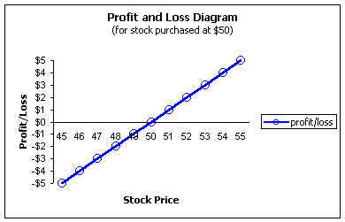
How do you read the chart? Using the chart below,
look at any stock price along the horizontal axis such
as $53, for example. Now trace a line to the
profit/loss line (blue) and see where that point lines
up with the vertical axis to the left. It lines up with
$3 profit, which is exactly what we calculated in the
spreadsheet previously. At a stock price of $46, we see
the profit/loss line shows a $4 loss.
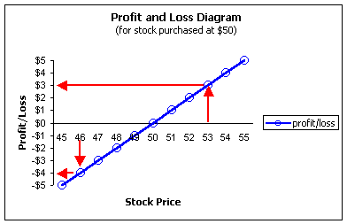
It should be evident that it is much easier to look
at the picture rather than the spreadsheet to see how a
long stock position, at $50, will behave. We know
immediately that the break-even point is at $50 -- the
point where the profit/loss line crosses zero on the
horizontal axis. We can also immediately see that there
is unlimited loss (at least all the way down to a stock
price of zero since you can never lose more than what
you paid) and an unlimited upside potential as the line
continues up to the right without bounds.
What if you are short the stock? Shorting stock
involves borrowing the shares and selling them with the
intent of buying them later at a cheaper price. You
are, in essence, doing the reverse of the traditional
"buy low - sell high" strategy. You are trying to "sell
high - buy low." The profit and loss diagram for short
stock looks like this:
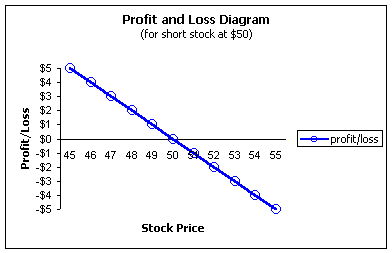
A short position will always behave the opposite of
the corresponding long position. In this case, we see
that profit is made as the stock falls and unlimited
losses occur as the stock rises. The unlimited loss
part is what makes the short stock position so
dangerous!
Got the hang of it? Ok, let's try something a little
more complicated and see what a long call position looks
like.
Long call position
A long $50 call gives the owner the right, but not
the obligation to buy stock at a price of $50 over a
specified amount of time. The trader, in this case,
paid $3 per share for that right and, consequently, that
is all that can be lost. So, no matter how low the
stock falls, this trader's maximum loss is just the
premium of $3.
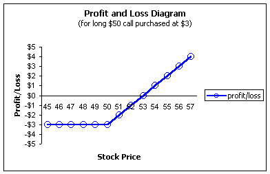
Looking at the chart below, we see the call option
trader has, in effect, limited the downside risk below
$50, as compared to the long stock position, but still
retained all of the upside potential. Of course, this
does not come for free. If you notice, the break-even
has been moved upward by $3, the price of the call
option, to $53. This is the most powerful benefit of
options; they allow you to custom-tailor the profit/loss
profiles to exactly suit your needs.
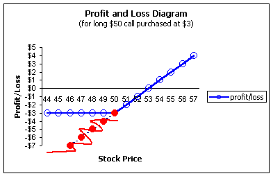
Short Call
Let's see what a short call looks like. Remember, we
said at the beginning that a short position would be
exactly the opposite of the corresponding long position.
|
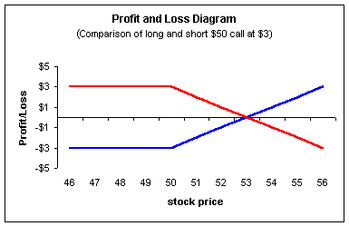
The profit/loss diagram for the short call (red line)
is telling us that the maximum profit is $3, the amount
of the premium. This will be made for any stock price
(at expiration) below $50. Because the $50 call will be
worthless to the owner (the long position) at
expiration, the short position will profit by the entire
premium of $3.
Notice how this short call is the mirror image of the
long call position (blue line). For the long call, $3
is the maximum loss; this is the amount of the short
call's maximum gain. The short call's break-even point
is at $53, because at this point at expiration, the
option will be trading for $3, (remember, this is the
profit for the long position). The short's position
will be worth -$3 and this is the amount for which the
call was sold for a net profit/loss of zero. If the
stock moves above $53, unlimited losses will occur for
the short call beyond this point. Because of the high
leveraged nature of options, the short call (also called
a naked or uncovered call) position is the riskiest of
all! Why? Because you can only make a limited gain on
the position, but are assuming an unlimited risk to do
so.
An interesting point should be made here. Look again
at the above chart with the long call and short call
positions. Because they are mirror images of each
other, this shows that no net flow of cash is
created from the options markets. In other words, any
option trader's gain is exactly somebody else's loss;
the money merely changes hands. The financial press is
often known for making the statement that the options
markets should not exist for this very reason. This is
a big misconception. The options markets were created
as a way to hedge risk; it is a way for hedgers to meet
speculators. So the next time you hear about a
devastating loss due to derivatives, remember, the
trader/traders on the other side of the trade made
exactly that amount of a gain.
Okay, let's work one backwards. I'll show you the
profit/loss chart and see if you can identify it:
|
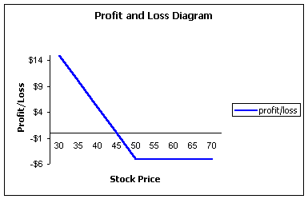
Look at the chart and try to read it: The trader in
the diagram can only lose $5, no matter how high the
stock goes. But, an unlimited amount (down to a zero
stock price) can be made if the stock falls below $50.
Which option position has these characteristics?
If you said a long $50 strike put, you're right! A
long put is a bearish position; you make money if the
stock falls (assuming it falls far enough to offset the
premium). A short stock position, as we saw earlier, is
bearish too. But, the long put position is not exposed
to the unlimited upside risk as the stock moves higher.
Again, this does not come for free. The long put
position, in this example, must have the stock fall
below $45 before money is made. The short stock
position will make money for any fall in the
stock below $50.
Okay, just to make sure you have it, let's look at a
short put, which remember, should be the mirror image of
the long put above.
|
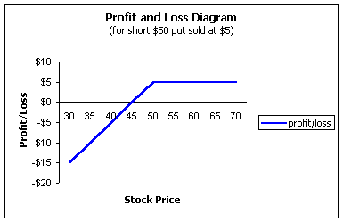
And we see that it is. It is easy to see from the
profit and loss diagram that a short put is bullish, as
maximum profit is made when the stock is above $50. The
trader is exposed to unlimited losses (down to a stock
price of zero). This short put position will break-even
at a stock price of $45, since the put will be worth -$5
at expiration, which is exactly the amount of the
premium collected.
Combination Strategies
The above strategies are relatively simple, but are
intended to teach you the basics in reading a profit and
loss diagram. Now we will get a little more complicated
and really see their value when we look at combination
strategies. These are strategies that combine two or
more positions to really custom tailor those risk-reward
profiles you may be seeking but were unable to do with
stock alone.
For starters, let's view the profit/loss diagram for
a covered call position, which is one of the most
popular strategies in options. The covered call is a
strategy in which the investor buys the stock and sells
(or writes) the call against that stock. The investor
will take in some money for doing so, which in effect,
provides a small downside hedge -- it lowers the
break-even point. However, the investor also gives up
some of the upside potential in the stock.
Let's piece the two positions together. Remember
that the profit/loss for long stock looks like this
(assuming that $50 is paid per share):
|
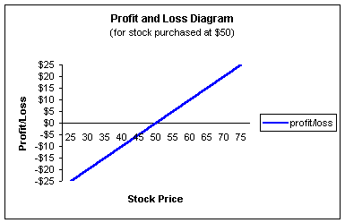
Now let's add the covered call. Say the investor
sells a $60 call against the stock for a premium of $5.
This means the investor will receive $5 per share but
may have to sell the stock at $60. On the surface, it
doesn't seem like a bad deal as you are getting paid to
sell your stock at a profit. As we will soon see, with
the help of our profit/loss diagram, there is a price to
pay.
By selling the $60 call, the investor "gives up" any
appreciation in the stock above $60; he has sold those
rights to somebody else -- the person who bought the
call. But the investor also reduces the downside risk,
slightly, in exchange. The total covered call position
now looks like the red line below:
|
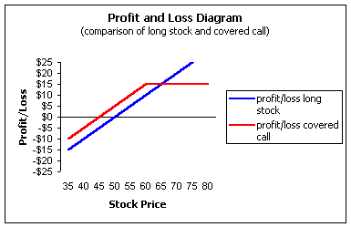
The red line is our profit and loss diagram for the
covered call position. We see that the break-even has
now been reduced to $45 because of the $5 premium
received from the call. However, for any stock
price above $60, there is no more appreciation in the
position as there is for the long stock position. The
maximum that can be made, in this example, is $15.
How? If the stock is $60, we make $10 on our stock
because we paid $50, but also made $5 from the call for
a total of $15. If the stock is higher than $60, it
does not matter; we are under contract to sell it for
$60, so our profit is still $15.
Now here is the price you pay for entering into a
covered call position. YOU are holding ALL of the
downside risk! You cannot sell your stock until
expiration of the call unless you are willing to buy the
call back, which could be a loss. Otherwise, you must
wait for expiration in order to fully profit by the $5
premium.
The Myth Of Covered Calls
There is a lot of bad information
floating around out there about covered
calls. If you ask most people, brokers
included, you will hear that the "risk" of a
covered call position is that you may have
to sell your stock for a price below
market. In other words, the stock may be
trading at $100 but you have to sell it for
$60. Look at all of the points on the above
chart at $60 or above -- the points where
you will likely be assigned on the option
and must sell your stock. Is this the
"risky" area of the chart? NO! It is our
maximum profit zone, exactly the points
where you want to be. There are a lot of
professionals and academic journals that
surprisingly make this mistake. It is a
huge myth in the marketplace. The risk of
any position is not missing out on some
reward.
If you are really sharp, you may have
noticed that the covered call profit/loss
diagram is exactly the same shape as that
for the short put shown earlier. These are
called "synthetic equivalents" (and will be
discussed in detail at a later time).
Covered calls are often considered among the
"safest" strategies while naked puts are
considered to be one of the riskiest.
Covered calls and naked puts are,
incorrectly, considered by many to be polar
opposites in terms of risk. Even option
approval levels with your broker will
usually require the lowest level for covered
calls and the highest level for naked puts.
Yet, from a profit and loss standpoint, they
are exactly the same strategies.
Now you should understand the beauty of
profit/loss diagrams. They can help uncover
the myths.
The risk with the covered call is the
same as with the naked put. The risk is
that the stock goes down.
|
So who should enter into a covered call position? If
you write calls against stock you would hold regardless,
then writing calls can be a great strategy because you
were willing to assume the risk with or without the
covered call.
But if you are buying the stock because of the
premium, then you should strongly reconsider your
strategy. People who do this are known as
premium-seekers, as they seek out the very high
premiums on the options, then buy the stock just to gain
the premium. I have witnessed, on more than one
occasion, million dollar accounts becoming virtually
worthless doing nothing but covered calls using this
method.
Long straddles
The long straddle is a position where the trader buys
a call and a put with same strikes and expiration. The
idea behind the strategy is that a large move is
expected but the trader is unsure about which
direction. Usually, this strategy is used prior to an
earnings report, FDA approval for a drug company or some
other big announcement. If the report is favorable, the
stock may run wild to the upside; if not, it may tank.
So the strategy plays both sides.
We will be discussing straddles in detail at a later
time, but we do want to make the point that playing
straddles solely for news announcements is usually not a
good strategy, as the price of the calls and puts will
already factor in the expected rise or fall of the
stock. This means that it will usually be difficult to
get out of the straddle for a profit. A bigger reason
to play straddles is if you think the market has
underestimated the volatility.
Say a trader buys a $50 call for $5 and a $50 put for
$3 for a total of $8. What does its profit/loss diagram
look like:
|
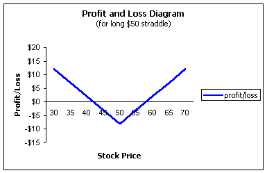
It is easy to see now where your profit zones are.
This trader will need to see the stock go above $58 (the
strike plus both premiums) or below $42 (the strike
minus both premiums). If the stock stays between these
two points, at expiration, the trader will lose a
maximum of $8.
Be aware of seminars or books that announce, "We'll
show you how to make money regardless of where the stock
moves" as they are usually talking about straddles.
The downside to the straddle is that you are
basically buying a very expensive call and a very
expensive put. In effect, you are buying the call for
the price of a call and a put. You are also buying a
put for the price of a call and a put. This is because
you must buy both options to complete the straddle yet
only one will be in-the-money at expiration (unless the
stock closes exactly at $50 or under a rare partial
tender offer where both options can expire
in-the-money). This makes the straddle very tough to
profit from unless you get a tremendous move in the
stock. So, while you may "make money" on either leg of
the spread, that's not necessarily the same as being
profitable.
Okay, ready for one more?
Ratio spread
Let's look at a more complicated position -- the
ratio spread. I am only showing this to demonstrate the
power of the profit and loss diagrams and why you should
learn to use them. I will not even discuss the strategy
(although it will be available in another section), but
instead, I want to see if you can identify the critical
points.
First of all, let's say a trader buys 10 $50 strike
calls for $5 and sells 35 $65 strike calls for $1-3/4.
That's a ratio spread, or ratio-write with calls.
Now, think about this for a minute. Just by looking
at the above ratio spread, can you tell what the trader
wants the stock to do? Where the maximum profit and
loss is? Where the danger zones are?
It's pretty tough, isn't it?
Now let's use the profit and loss diagram for the
ratio spread described and see if we can answer the
questions a little easier:
|
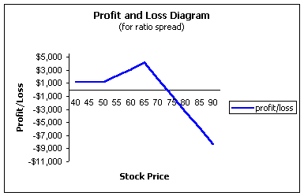
Much easier, isn't it? We can now see that the
trader will make money if the stock either collapses
below $50 or rises up to $65, which is the point of
maximum profit. After $65, the trader starts to lose
some profits and will reach a break-even point around
$73. Beyond $73, unlimited losses will occur.
Would you have been able to analyze the trade in this
way just knowing that the trader bought 10 $50 calls at
$5 and sold 35 $65 strikes at $1-3/4? Don't feel bad,
most people can't. But that's what profit and loss
diagrams are for.
Learn to use them, as they will greatly help your
understanding of option strategies!
| | | | | | |